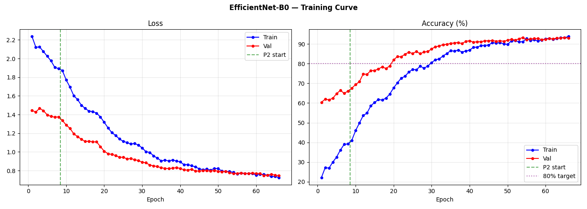
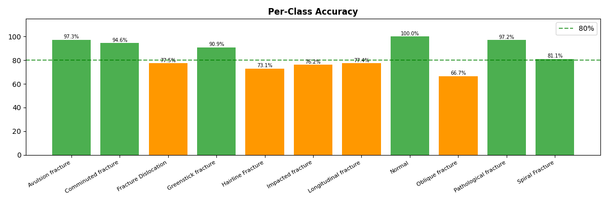
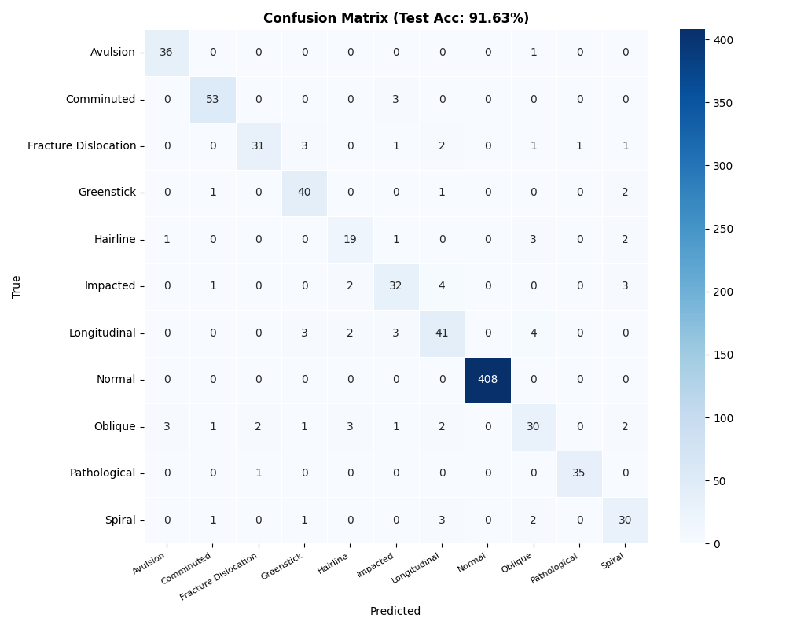

1为什么与众不同— Differentiators
大多数医学影像 AI 项目只输出"是不是骨折 + 类别名"。本系统在四个维度上做了系统性升级:
隐私优先
100%
浏览器内推理,医学影像永不上传。ONNX Runtime Web + WebGPU/WebGL/WASM 三级 fallback。
检测器真实指标
0.82
box-level mAP50,在多源统一 X 光数据集上训练,有可复现 manifest + 完整审计记录。
多任务分类
3 heads
同时输出位置 (Shaft/Joint)、方向 (横/斜/纵)、形态学 (移位/粉碎),不是单一类别名。
临床专家规则
4 status
医学规则 + 状态码 + 风险警示 — 不吐生概率,产出可读的诊断建议。
2系统架构— Architecture Overview
五步级联流水线,每一步的输出都是下一步的输入。架构图(精简):
📤 Upload →
🔍 YOLOv8 Detector →
📦 Per-box ROI Crop
↓
🧠 Multi-Task Net
═
Siamese EfficientNet-B3
+
EdgeGuidedAttention
输出 3 个任务头 →
📍 Location
📐 Direction
🔬 Morphology
↓
⚕ Clinical Expert Rules →
📋 Status Code + Prompt →
📊 PDF · Heatmap · JSON
关键设计:Siamese 双输入(局部 ROI + 全局上下文)让模型在判断时同时看到病变细节和解剖位置;
EdgeGuidedAttention 利用 Sobel 边缘 + 卷积评分,从拓扑学角度门控"粉碎"判定,数学上保证 — 没有独立游离骨片证据,不会盲目报粉碎。
3多任务网络— Multi-Task Net
Task 1 — Location
92%
Shaft (骨干) / Joint (关节) 二分类。从几何上禁止"骨干→关节类"误判(例:Avulsion 不能发生在长骨中段)。
Task 2 — Direction
86%
Transverse / Oblique / Longitudinal 三分类。让模型显式学习骨折线方向,而不是被纹理特征带跑。
Task 3 — Morphology
2 labels
[Displaced, Comminuted] 多标签。EdgeGuidedAttention 后处理,只有真有独立闭合骨片时才放行 Comminuted 判定。
Siamese Backbone
Dual Input (ROI + Global)
EdgeGuidedAttention
Uncertainty-Weighted Loss
Asymmetric Loss (multi-label)
Post-hoc topology gating
4临床专家规则— Expert System
原始模型概率会经过 3 条医学逻辑规则 后处理,输出 4 个状态码之一,并附带三语临床决策文案:
规则 1 · 解剖位置锁定
Shaft Lock → forbid Avulsion
当 Location 头极度确定为长骨骨干时,从最终输出中强制移除"撕脱骨折"候选(撕脱发生在肌腱附着点,定义上不在骨干中段)。
规则 2 · 动态粉碎性阈值
Dynamic Comminuted bands
粉碎判定不是单一阈值,而是三段式 — 强证据 → STATUS_COMMINUTED;边界 → STATUS_AMBIGUOUS_WARNING(触发智能警告);弱证据 + 横向主导 → 收敛为横形/斜形。
规则 3 · 整体置信度地板
Confidence floor override
三个任务的最低置信度为整体置信度。低于安全阈值时,即使主诊断明确也降级为 STATUS_LOW_CONFIDENCE,并要求复核。
STATUS_CLEAR · 200
STATUS_COMMINUTED · 201
⚠ STATUS_AMBIGUOUS_WARNING · 202
STATUS_LOW_CONFIDENCE · 203
5五步推理流程— Inference Pipeline
📤
① 上传 X 光片
支持 JPG / PNG / WebP / BMP / DICOM (.dcm)。客户端 DICOM 解析(dicom-parser),即时显示在 lightbox。
JPG/PNGDICOMDrag & Drop
🔍
② YOLOv8m 检测
检测器在 ROI 上定位骨折区域,输出 bounding box + 置信度。非 X 光图像自动旗标,提示用户。
mAP50 0.8296% sensitivityNMS
🦴
③ 每框多任务分类
对每个检测框单独裁剪(带 padding),同时送入局部 ROI + 全局图,得到位置、方向、形态学三路输出 + EdgeGuidedAttention 注意力图。
SiameseEdgeAttentionPer-box independent
⚕
④ 专家规则后处理
3 条临床规则 + 整体置信度地板,生成 STATUS 码 + 中/韩/英三语临床决策文案,直接告诉医师下一步建议。
3 rules4 status codestri-lingual
📋
⑤ 报告导出
PDF 结构化报告 / 标注图像 / Grad-CAM 风格 occlusion 热力图 / JSON 数据接口(供 ECharts 等可视化)。
PDFHeatmapJSON
6评估结果— Evaluation
检测器在独立 holdout 测试集上的真实评估(非自报,有可复现脚本):

Training Curve · mAP50 / Loss

Per-class Metrics

Confusion Matrix · Classifier
Detection · mAP50
0.82
box-level on holdout · YOLOv8m
Detection · Sensitivity
96%
image-level @ Youden-optimal
MTL · Location acc
92%
Shaft / Joint binary
MTL · Direction acc
86%
Transverse / Oblique / Longitudinal
7项目里程碑— Milestones
Phase 1
基础检测器 + 单分类器原型
YOLOv8 + ImageNet 预训练 EfficientNet,验证端到端可行性。
Phase 2
浏览器部署 + DICOM 支持
ONNX 导出 + ONNX Runtime Web + 三级后端协商。新增 DICOM 解析。
Phase 3
数据质量审计 + 多源统一
清洗 + 合并多个公开数据源,可复现 manifest,审计数据泄漏与标签噪点。
Phase 4
检测器全面重训(HPO)
系统性超参搜索 + warm-start + 多 epoch 评估,mAP50 大幅提升。
Phase 5
多任务网络架构
Siamese 双输入 + 3 任务头 + EdgeGuidedAttention 拓扑门控 + Uncertainty-Weighted Loss。
Phase 6
临床专家规则 + 部署
医学规则后处理 + 状态码 + 三语临床文案;FastAPI 参考后端 + 浏览器同源实现。
8部署与隐私— Deployment & Privacy
模型导出为 ONNX,通过 ONNX Runtime Web 在浏览器内推理。
无服务器、无数据上传、完全端侧。三级后端自动协商:WebGPU → WebGL → WASM。
✅ Zero Upload
✅ Zero Server-side Storage
✅ Works Offline (after first load)
📱 Capacitor → Android/iOS APK
🖥 Electron → Desktop
🌐 Web → Modern browsers
可选 Python 参考后端:为需要审计日志或 PACS 集成的临床场景提供
FastAPI 包装的 ONNX Runtime 推理服务,业务逻辑(专家规则、置信度地板、临床文案)与浏览器端完全一致。
9局限与未来工作— Limitations
- 非医疗器械:本系统仅供教育和研究演示,不能用于临床诊断。任何决策必须由有资质的放射科医师做出。
- 启发式多任务标签:位置/方向/形态学标签由原始类别名启发式派生(无放射科医师重新标注),论文级结果需要正式标注。
- 无外部多机构验证:目前仅在公开数据集 holdout 上评估,跨机构 / 设备 / 患者群体泛化性需进一步研究。
- 形态学 AP 数值偏低:多标签的 Comminuted/Displaced AP 受 7.6% 类不平衡影响,绝对数值低 — 但 EdgeGuidedAttention 拓扑门控保证不乱报。
- 未来工作:(1) 放射科医师标注;(2) 多机构外部验证;(3) 三视图 DICOM 整合;(4) 临床工作流集成(PACS、HL7)。
10致谢— Acknowledgments
本项目使用了多个开源工具与公开数据资源。我们感谢
Ultralytics(YOLOv8 框架)、
Microsoft ONNX Runtime(浏览器推理)、
PyTorch / torchvision(EfficientNet 骨干)、
FastAPI(参考后端),
以及公开 X 光骨折数据集的贡献者们。
数据集出处、详细超参数、训练脚本、模型权重等技术资料未在本页公开,以保护原创性与避免被未授权复制。
有学术合作需求请通过正式渠道联系作者。